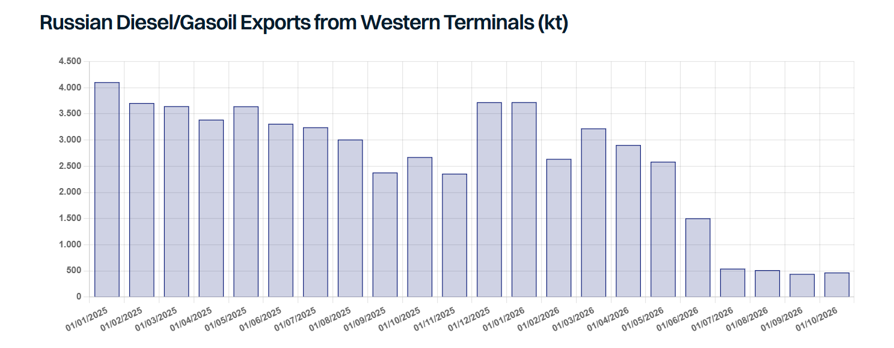

The Trump administration has been busy easing sanctions over the past couple of weeks. On 9 October, OFAC issued General License 135. It allows the sale, delivery and import into the US of Russian-origin diesel until 7 April 2027. On 16 October, Trump waived the main measures of the Lindsey O. Graham Sanctioning Russia and Iran Act, which he signed on 18 September. The Act provides for a 500% tariff on Russian goods and up to 100% tariffs on major buyers of Russian oil and gas. Last week, news also emerged that the administration was considering easing shadow fleet sanctions, as covered in last week’sreport.
Of the three measures, the Graham Act waiver has no physical impact, as the tariffs were never in force. Easing shadow fleet sanctions could, to an extent, provide some additional tanker capacity, primarily for shuttle runs through Hormuz. The diesel licence sits somewhere in between: it is unlikely to meaningfully ease the global diesel shortage, but it carries a strong political message.
The first problem with the diesel waiver is volume, as Russia has little to spare. Ukrainian drone attacks on refineries cut domestic supply, prompting Moscow to ban diesel exports in July. Seaborne exports from western terminals fell to an average of 510kt per month in Q3, from 3.27mt per month last year. Following the agreement with the US, the Russian government has begun lifting the restrictions, authorising the immediate release of 500kt for export globally. It has also confirmed it stands ready to supply 300kt to the US this month, followed by 500kt in November and 1mt in December, with three MRs reportedly already heading to the US with diesel. So far, however, preliminary trade data shows little change, with October exports to date only modestly above levels seen over the July-September period. Meanwhile, Ukrainian strikes continue. The Ryazan refinery was hit again on 15 October, and Russian officials reported another attack on a refinery in the St Petersburg area on 18 October. Still, Kyiv has shown some willingness to compromise: on 19 October, President Zelensky offered a 30-day pause in return for Patriot cover for Ukraine’s airspace. Washington has not signalled it will accept, and instead pressed Kyiv to halt strikes altogether.
The legal side is another stumbling block. The licence does not cover sanctioned vessels, services such as bunkering, or the price cap, which limits the role of mainstream tankers. EU and UK rules have not changed either. The EU still bans trading, brokering and transporting Russian diesel unless it is within the price cap. EU and UK banks and insurers cannot finance or insure cargoes above the cap, and with diesel prices this high, many cargoes are likely to be above it. In the US, the licence may also face a legal challenge, since the 2022 Russian oil import ban can only be lifted once the President certifies to Congress that its conditions have been met.
In the near term, volumes are unlikely to amount to anything meaningful unless attacks on Russian refineries stop. However, if Ukraine is successfully pressed to halt the attacks, the implications would be considerably bigger, as that would eventually allow Russia to export more to its usual trading partners, not just the US. Politically, Trump appears to be warming to Russia, although his position can change quickly. With this shift in Washington and parts of Europe grappling with social unrest amidst mass migration, rising living costs, soaring fuel prices and the growing influence of right-wing political parties, could Europe be forced to also reconsider its position?

Data source:Gibson Shipbrokers